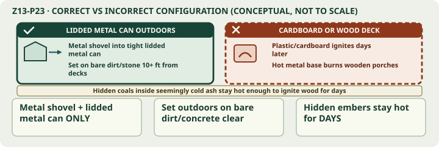

Z13-P23 · Home survival and utilities · New manuscript
Dispose of wood-stove ashes strictly in lidded outdoor metal cans
Prevent delayed deck, porch, and garage house fires triggered by hidden live coals inside seemingly cool ash.
When it applies · Every household using a wood stove, fireplace, or outdoor fire pit during winter heating or outages.
Equipment · Dedicated heavy-gauge metal ash bucket with tight-fitting metal lid, metal shovel, and bare non-combustible outdoor ground pad well away from buildings.

Actions
- Scoop cooled ashes strictly with a metal shovel into a dedicated lidded METAL container—NEVER into cardboard boxes, paper bags, plastic buckets, or household vacuums (hidden embers ignite days later).[U18, U04]
- Carry the tightly lidded metal ash can immediately OUTDOORS onto bare dirt, snow, gravel, or concrete at least 10+ feet away from wood decks, porches, siding, fences, and garages—never leave an ash bucket sitting on a wooden porch "just for tonight."[U18, U04]
- Douse ashes thoroughly with water until saturated and stone-cold (stirring and feeling carefully after days of cooling) before final lawful disposal.[U18, C04]
Failure recognition · Leaving a metal pail of "cold" wood-stove ash on a wooden back deck overnight where insulated coals heat the metal bottom and ignite the decking.[U18, U04]
Verify · Confirm metal-only lidded container sits outdoors on bare non-combustible ground well clear of decks and structures.[U18]
Stop or change course · Any visible glow, smoke wisp, or warm metal can requires moving strictly outdoors onto bare non-combustible ground and soaking thoroughly with water.[U18, C04]
Evidence and editorial notes
- C04 · USDA Forest Service / Smokey Bear · Smokey Bear’s Campfire Safety Guide (agency PDF)
- Section: Maintain and extinguish a campfire · Conditions: Occupied campfire, water and tools available
Support: Stay with the fire. Drown, stir and add water again until cool. Leaving visible embers or merely covering them is unsafe.
Limitations: Deep duff or peat soils can hold smoldering embers underground even after surface ash cools. · Conflicting evidence: None; prohibits dirt-only burial as primary extinguishment.
Editorial note: Enforces drown-stir-feel-cold cycle before site departure. · Specialist reviewer: Fire prevention and land management
Primary source · checked 2026-11-24 - U04 · FEMA / Ready.gov · Home Fires (current web edition)
- Section: Home Fires > Smoke Alarms, Fire Extinguishers, and Escape Plans · Conditions: Residential fire prevention during outages and supplemental heating
Support: Test smoke alarms monthly on every level and outside sleeping areas, keep two exits clear from every room, store fuels outside living spaces in approved containers, and evacuate immediately if a fire exceeds incipient containment.
Limitations: Candles and improvised indoor flames dramatically elevate outage house-fire deaths. · Conflicting evidence: None; integrates with CPSC CO-alarm rules (C09).
Editorial note: Anchors outage fire prevention, fuel storage, and exit readiness in Z13. · Specialist reviewer: Fire prevention and residential safety
Primary source · checked 2026-11-24
Current assessment · W2C-E014 (2026-11-25) · Open: source scope does not match the claim; escalated: Supported: smoke alarms on every level including the basement; batteries twice a year unless 10-year lithium; replace units every 10 years or per manufacturer; keep flammable liquids away from heat sources; refuel generators outdoors. Limits: Not on the page although U04 asserts them: monthly testing, alarms outside sleeping areas, two exits from every room, storing fuels outside in approved containers, extinguisher thresholds, and grease-fire guidance. - U18 · NFPA · Heating Fire Safety (current web edition)
- Section: Wood Stoves, Chimneys, Ash Disposal, and Fuel Storage Safety · Conditions: Residences heated by properly installed wood stoves or fireplaces
Support: Burn seasoned dry wood only, clean creosote-prone chimneys regularly through qualified sweeps, empty cooled ashes strictly into lidded metal containers set outdoors well away from decks and structures, and never burn treated lumber or trash indoors.
Limitations: Embers stay hot enough to ignite cardboard or wood decks days after a fire appears dead. · Conflicting evidence: None; critical winter wood-heat fire prevention boundary.
Editorial note: Covers solid-fuel residential heating maintenance and ash-fire failure modes. · Specialist reviewer: Fire safety and certified chimney/HVAC trades
Primary source · checked 2026-11-24
Source lineage · NFPA Heating Fire Safety; new manuscript · Classification · New manuscript.